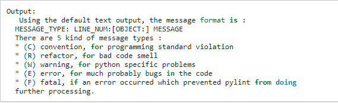

PyLint Tutorial
Beginner tips and tricks
Pylint is a static code analysis tool to find coding errors in your Python code. It can help you single out bugs and can make your code easy to read and edit.
- Installing Pylint
- Using pylint on a python program
- missing-docstring
- More hints on pylint.
The following is the code to install pylint on Windows, Mac, or Linux
The code to use pylint in a program is pretty much like running a python code.
The most common error for a newbie programmer in pylint. It just means that you are missing descrition for the code that follows.
Using something like ("""My program""") at the position of the error will solve this.
This snippet hepls identify the kind of problem pylint picks up from your code.
